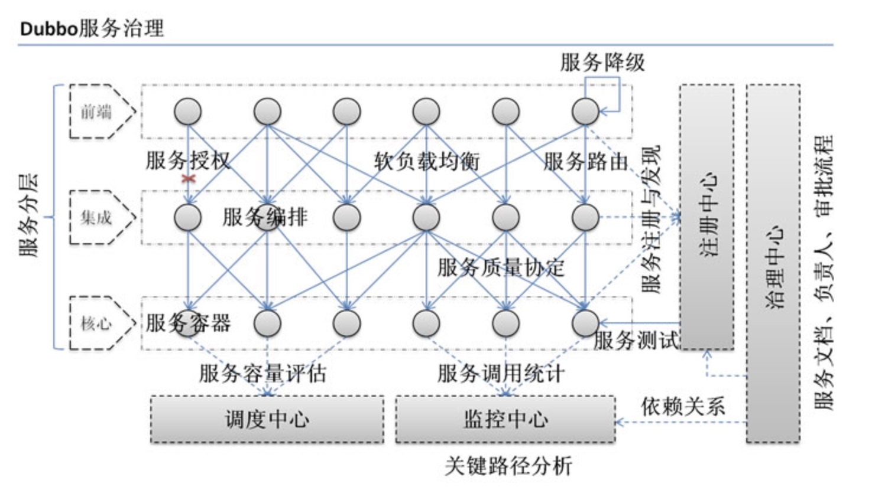
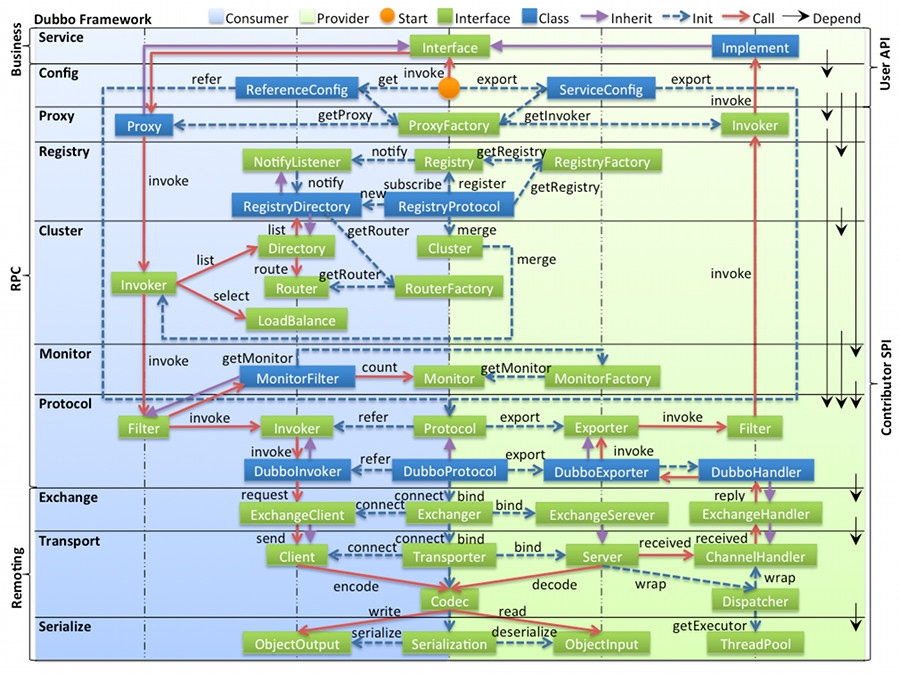
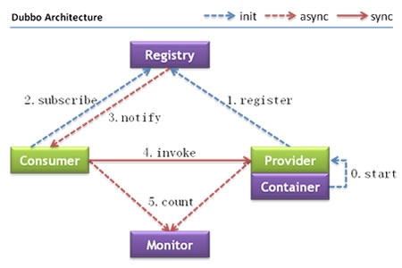

Dubbo 简介
在分布式服务架构下，各个服务间的相互 rpc 调用会越来越复杂。最终形成网状结构，此时服务的治理极为关键。
Dubbo 是一个带有服务治理功能的 RPC 框架，提供了一套较为完整的服务治理方案，其底层直接实现了 rpc 调用的全过程，并尽力做事 rpc 远程对 使用者透明。下图展示了 Dubbo 服务治理的功能。

简单的说，Dubbo 就是个服务调用的框架，如果没有分布式的需求，其实是不需要用的，只有在分布式的时候，才有使用 Dubbo 这样的分布式服务框架的需求，并且本质上是个服务调用的东东。
其核心部分包括：
- 远程通讯:提供对多种基于长连接的 NIO 框架抽象封装，包括多种线程 模型、序列化以及“请求-响应”模式的信息交换方式。
- 集群容错:提供基于接口方法的透明远程过程调用，包括多协议支持以 及软负载均衡，失败容错、地址路由、动态配置等集群支持。
- 自动发现:基于注册中心目录服务，使服务消费方能动态的查某服务的提供方，使地址透明，使服务提供方可以平滑增加或减少机器。
dubbo 的架构
dubbo 的整体结构如下图所示：

- 图中左边淡蓝背景的为服务消费方使用的接口，右边淡绿色背景的为服务提供方使用的接口，位于中轴线上的为双方都用到的接口。
- 图中从下至上分为十层，各层均为单向依赖，右边的黑色箭头代表层之间的依赖关系，每一层都可以剥离上层被复用，其中，Service 和 Config 层为 API，其它各层均为 SPI。
- 图中绿色小块的为扩展接口，蓝色小块为实现类，图中只显示用于关联各层的实现类。
- 图中蓝色虚线为初始化过程，即启动时组装链，红色实线为方法调用过程，即运行时调时链，紫色三角箭头为继承，可以把子类看作父类的同一个节点，线上的文字为调用的方法。
Dubbo总体架构设计一共划分了10层：
-
服务接口层(Service)
该层是与实际业务逻辑相关的，根据服务提供方 和 服务消费方的业务设计对应的接口和实现。
-
配置层(Config)
对外配置接口，以 ServiceConfig 和 ReferenceConfig 为中 心，可以直接 new 配置类，也可以通过 Spring 解析配置生成配置类。
-
服务代理层(Proxy)
服务接口透明代理，生成服务的客户端 Stub 和服务 器端 Skeleton，以 ServiceProxy 为中心，扩展接口为 ProxyFactory。
-
服务注册层(Registry)
封装服务地址的注册与发现，以服务 URL 为中心， 扩展接口为RegistryFactory、Registry 和 RegistryService。可能没有服务注册中心，此时服务提供方直接暴露服务。
-
集群层(Cluster)
封装多个提供者的路由及负载均衡，并桥接注册中心，以 Invoker 为中心，扩展接口为 Cluster、Directory、Router 和 LoadBalance。 将多个服务提供方组合为一个服务提供方，实现对服务消费方透明，只 需要与一个服务提供方进行交互。
-
监控层(Monitor)
RPC 调用次数和调用时间监控，以 Statistics 为中心， 扩展接口为 MonitorFactory、Monitor 和 MonitorService。
-
远程调用层(Protocol)
封将 RPC 调用，以 Invocation 和 Result 为中心， 扩展接口为 Protocol、Invoker 和 Exporter。Protocol 是服务域，它是 Invoker 暴露和引用的主功能入口，它负责 Invoker 的生命周期管理。Invoker 是 实体域，它是 Dubbo 的核心模型，其他模型都向它靠扰，或转换成它，它代表一个可执行体，可向它发起invoke 调用。它有可能是一个本地的实现，也可能是一个远程的实现，也可能是一个集群实现。
-
信息交换层(Exchange)
封装请求响应模式，同步转异步，以 Request 和 Response 为中心，扩展接口为 Exchanger、ExchangeChannel、ExchangeClient 和 ExchangeServer。
-
网络传输层(Transport)
抽象 mina 和 netty 为统一接口，以 Message 为中心，扩展接口为 Channel、Transporter、Client、Server 和 Codec。
-
数据序列化层(Serialize)
可复用的一些工具，扩展接口为 Serialization、ObjectInput、ObjectOutput 和 ThreadPool。
各层之间的关系：
- 在 RPC 中，Protocol 是核心层，也就是只要有 Protocol + Invoker + Exporter 就可以完成非透明的 RPC 调用，然后在 Invoker 的主过程上 Filter 拦截点。
- 图中的 Consumer 和 Provider 是抽象概念，只是想让看图者更直观的了解哪些类分属于客户端与服务器端，不用 Client 和 Server 的原因是 Dubbo 在很多场景下都使用 Provider, Consumer, Registry, Monitor 划分逻辑拓普节点，保持统一概念。
- 而 Cluster 是外围概念，所以 Cluster 的目的是将多个 Invoker 伪装成一个 Invoker，这样其它人只要关注 Protocol 层 Invoker 即可，加上 Cluster 或者去掉 Cluster 对其它层都不会造成影响，因为只有一个提供者时，是不需要 Cluster 的。
- Proxy 层封装了所有接口的透明化代理，而在其它层都以 Invoker 为中心，只有到了暴露给用户使用时，才用 Proxy 将 Invoker 转成接口，或将接口实现转成 Invoker，也就是去掉 Proxy 层 RPC 是可以 Run 的，只是不那么透明，不那么看起来像调本地服务一样调远程服务。
- 而 Remoting 实现是 Dubbo 协议的实现，如果你选择 RMI 协议，整个 Remoting 都不会用上，Remoting 内部再划为 Transport 传输层和 Exchange 信息交换层，Transport 层只负责单向消息传输，是对 Mina, Netty, Grizzly 的抽象，它也可以扩展 UDP 传输，而 Exchange 层是在传输层之上封装了 Request-Response 语义。
- Registry 和 Monitor 实际上不算一层，而是一个独立的节点，只是为了全局概览，用层的方式画在一起。
Dubbo 架构具有以下几个特点，分别是连通性、健壮性、伸缩性、以及向未来架构的升级性。
连通性
- 注册中心负责服务地址的注册与查找，相当于目录服务，服务提供者和消费者只在启动时与注册中心交互，注册中心不转发请求，压力较小
- 监控中心负责统计各服务调用次数，调用时间等，统计先在内存汇总后每分钟一次发送到监控中心服务器，并以报表展示
- 服务提供者向注册中心注册其提供的服务，并汇报调用时间到监控中心，此时间不包含网络开销
- 服务消费者向注册中心获取服务提供者地址列表，并根据负载算法直接调用提供者，同时汇报调用时间到监控中心，此时间包含网络开销
- 注册中心，服务提供者，服务消费者三者之间均为长连接，监控中心除外
- 注册中心通过长连接感知服务提供者的存在，服务提供者宕机，注册中心将立即推送事件通知消费者
- 注册中心和监控中心全部宕机，不影响已运行的提供者和消费者，消费者在本地缓存了提供者列表
- 注册中心和监控中心都是可选的，服务消费者可以直连服务提供者
健壮性
- 监控中心宕掉不影响使用，只是丢失部分采样数据
- 数据库宕掉后，注册中心仍能通过缓存提供服务列表查询，但不能注册新服务
- 注册中心对等集群，任意一台宕掉后，将自动切换到另一台
- 注册中心全部宕掉后，服务提供者和服务消费者仍能通过本地缓存通讯
- 服务提供者无状态，任意一台宕掉后，不影响使用
- 服务提供者全部宕掉后，服务消费者应用将无法使用，并无限次重连等待服务提供者恢复
伸缩性
- 注册中心为对等集群，可动态增加机器部署实例，所有客户端将自动发现新的注册中心
- 服务提供者无状态，可动态增加机器部署实例，注册中心将推送新的服务提供者信息给消费者
Dubbo 服务的角色关系
服务提供方 和 服务消费方 之间的调用关系，如下图所示：

节点角色说明：
| 节点 |
角色说明 |
| Provider |
暴露服务的服务提供方 |
| Consumer |
调用远程服务的服务消费方 |
| Registry |
服务注册与发现的注册中心 |
| Monitor |
统计服务的调用次数和调用时间的监控中心 |
| Container |
服务运行容器 |
调用关系说明
- 0：服务容器负责启动，加载，运行服务提供者。
- 1：服务提供者在启动时，向注册中心注册自己提供的服务。
- 2：服务消费者在启动时，向注册中心订阅自己所需的服务。
- 3：注册中心返回服务提供者地址列表给消费者，如果有变更，注册中心将基于长连接推送变更数据给消费者。
- 4：服务消费者，从提供者地址列表中，基于软负载均衡算法，选一台提供者进行调用，如果调用失败，再选另一台调用。
- 5：服务消费者和提供者，在内存中累计调用次数和调用时间，定时每分钟发送一次统计数据到监控中心。